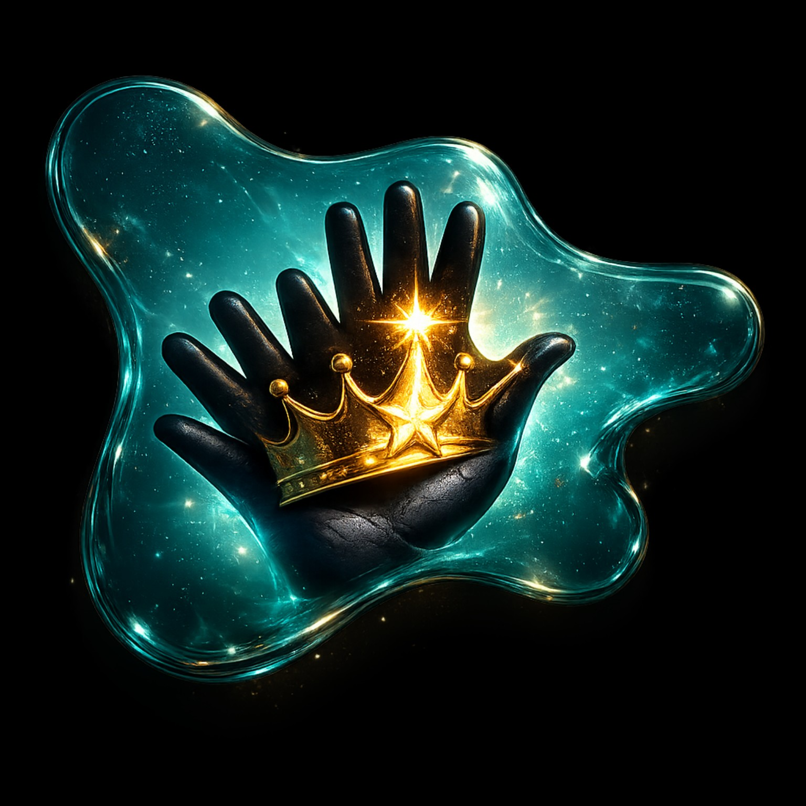

A living library of worlds already brought to life
Every world deserves to be seen.
A growing collection of visual identities, digital experiences and personalized websites — each one carrying the feeling and story that brought it into existence.

The showcase
Worlds already brought to life.
See the visual that gave the world its first form. Enter the story, then step through to the finished website.